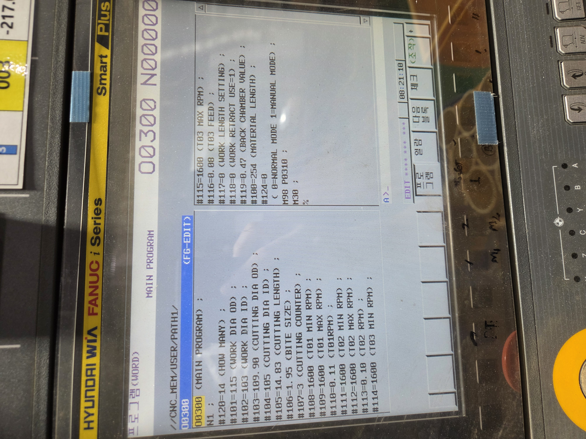
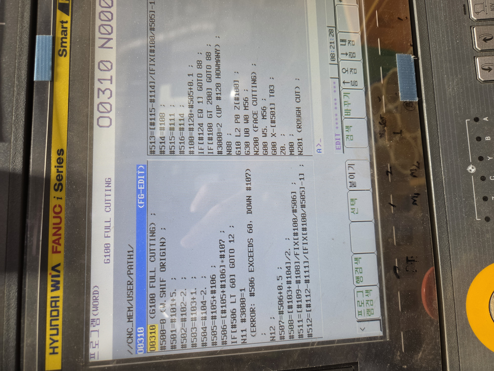
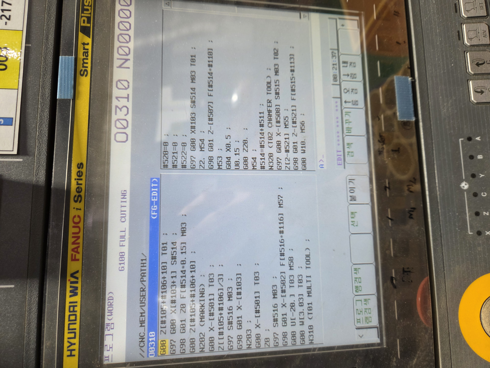
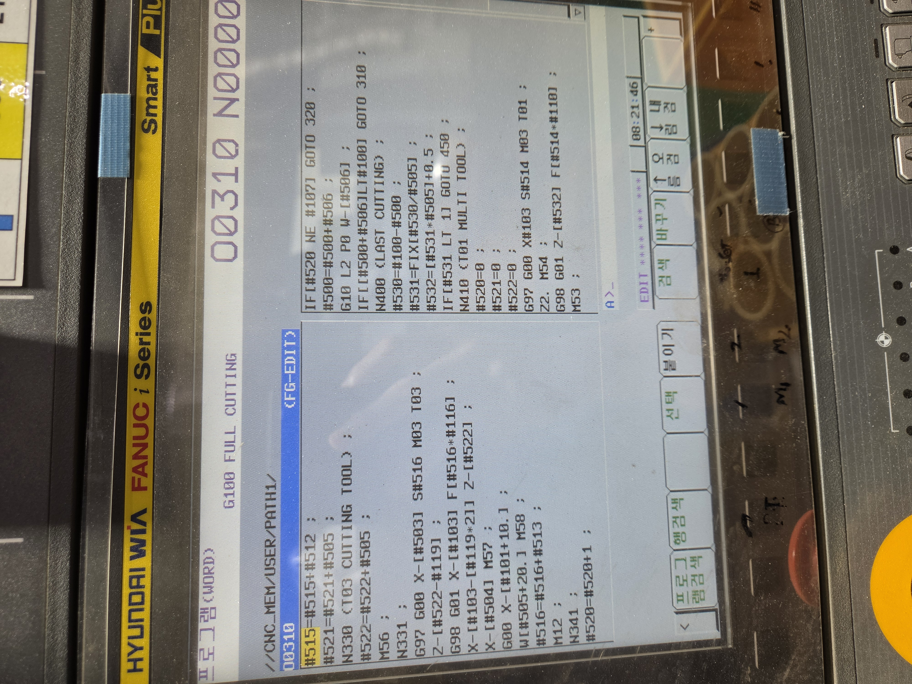
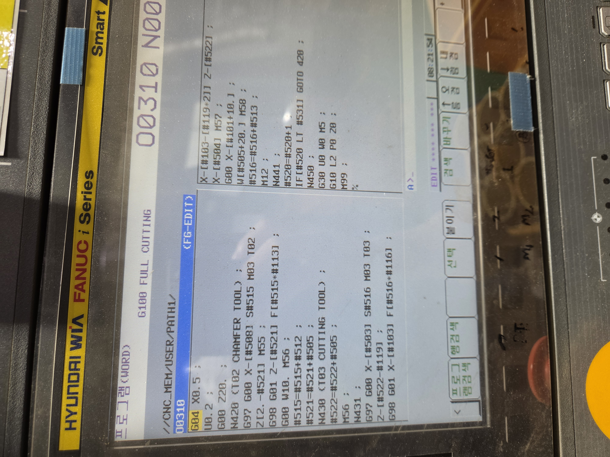

사용자 전달 순서 · 이전 원문 대조 표기
G00 W10. M55; #521=#521+#505; N330 (T03 LOWER PARTING); #516=#114+#513*#523; #522=#522+#505; G00 X-[#503] T03;
O0300 메인 + O0310 서브 · T1 내·외경 / T2 면취 / T3 절단 · 사진 수령 2026-09-11
CNC 화면 사진을 읽어 등록한 자료입니다. O0310의 #513 계산 줄 끝이 잘려 있습니다. 해당 부분은 전사 코드에 표시했고 임의로 보완하지 않았습니다. TXT는 사진 대조용이며 CNC 입력용 완성본이 아닙니다.
사용자 관찰: 2호기는 바로 절단으로 넘어가며, 3·5·6호기는 약 0.8초 멈칫한 뒤 절단으로 넘어갑니다. 이때 T2는 이미 들어갔고 공구대가 멈춰 있습니다. 선택정지는 OFF입니다. 추가로 5호기에서 M01을 삭제했지만 지연은 그대로였다고 확인했습니다.
5호기의 M01 삭제 시험 결과: 변화 없음. 따라서 M01 하나가 원인이라는 가설은 이번 시험으로 지지되지 않습니다. 사용자는 G00 W10. M55;까지 부드럽게 동작하고, 그 뒤 #521 증가 → N330 → #516 계산 → #522 증가 → 첫 X/T03 이동 사이에서 멈칫한다고 범위를 좁혔습니다. 어느 명령의 내부 처리가 기다리는지는 아직 확인되지 않았습니다. 3·6호기에서 M01 삭제를 시험한 결과는 아닙니다.
2026-09-11 사용자 확인: 2호기는 현대위아 FANUC i Series Smart Plus, 3호기는 현대위아 FANUC Series 0i-TC, 5·6호기는 FANUC Series 0i-TD입니다. Smart Plus의 내부 FANUC 세부 모델은 미확인입니다. 제어기의 블록 처리·선행 해석 성능이나 기계 측 완료 처리 차이를 검토하되, 모델명만으로 계산 세 줄에 0.8초가 걸린다고 단정하지 않습니다.
화면을 읽는 확인입니다. 진단값·파라미터·PMC 타이머를 편집하지 않습니다. 근거: FANUC B-64305EN/01 공개 사본, 적용 모델 표 및 §1.3 진단 기능·§1.4 CNC 상태표시.
앞서 계산한 0.833초는 Z 2 mm를 G01로 이동하는 시간이며, 복귀 후 정지한 채 기다리는 약 0.8초와 별개입니다. T2의 실제 복귀 이동 시간도 이번 정지 구간과 구분합니다. 5호기만의 추가 X 이동·계산 재배치는 3·6호기와 공통으로 생기는 정지의 단독 원인으로 보기 어렵습니다.
지금 전달된 CNC 순서는 9월 10일 계산 위치를 옮기기 전 원문과 대응합니다. 현재 앱·바탕화면의 등록본은 #516/#522를 면취 전에, #521을 W10 전에 계산하므로 실제 CNC에 적용됐다고 간주하지 않습니다. 사용자는 첫 X 줄이 G00 X-[#503] T03;이고 S#516 M03는 그 뒤 Z 이동 다음 X 접근 줄에 있음을 추가 확인했습니다. 아래는 사용자 전달 순서를 이전 원문과 대조해 기호를 정리한 참고자료이며, CNC에서 직접 추출한 파일은 아닙니다.
G00 W10. M55; #521=#521+#505; N330 (T03 LOWER PARTING); #516=#114+#513*#523; #522=#522+#505; G00 X-[#503] T03;
G00 W10. M55; M01; N330 (T03 LOWER PARTING); G97 G00 X-[#503] S#516 M03 T03;
이번 기록은 진단 설명 갱신입니다. 가공 NC·공구 보정·M코드·제어기 설정은 변경하지 않았으며, GitHub Pages 푸시도 하지 않았습니다.
면취 이송은 2호기 160 mm/min, 5호기 144 mm/min, O8000 144 mm/min입니다. 현재 5호기와 O8000의 면취 이송·Z 접근·후퇴 방식은 같습니다. 2호기의 이송속도는 두 등록본보다 약 11.1% 높고, Z 2 mm 이송의 이상적인 시간 차이는 약 0.083초입니다.
O8000 비교는 김공장 o8000.html에 등록된 6호기 기준 O8000/O9010 원문입니다. 3호기에도 같은 자료가 연결돼 있지만, 이번에 3호기 CNC에서 별도로 가져온 코드·실제 설정을 확인한 것은 아닙니다. 3호기 배정 원문 · 6호기 배정 원문
1600 rpm × 0.10 · Z 2 mm: 0.750초
1600 rpm × 0.09 · Z 2 mm: 0.833초
1600 rpm × 0.09 · Z 2 mm: 0.833초
Z 2 mm 시간은 이송 오버라이드 100%, 가감속·급속·공압·정지를 제외한 계산값입니다.
세 프로그램의 T2 면취 방식은 같습니다. T2를 X 위치에 놓고, 면취기 전진과 Z 2 mm 앞까지의 급속 접근을 같은 블록에 지시한 뒤, G01로 2 mm 들어가고 W10으로 빠집니다. 5호기와 O8000 사이에는 이 면취 이송·거리·M코드의 차이가 없습니다.
사용자 확인: 선택정지는 OFF이며, 5호기 M01 삭제 후에도 지연은 그대로입니다. 아래 5호기 원문은 앱 등록본입니다. 이번에 전달된 실제 CNC의 계산 위치·첫 T03 줄과 차이가 있어 위 진단 기록에 따로 표시했습니다.
| 비교 항목 | 2호기 O0300 / O0310 | 5호기 O0600 / O9050 | 3·6호기 O8000 / O9010 6호기 원문 기준 | 해석 |
|---|---|---|---|---|
| 공구·가공 방식 | T1 내·외경 → T2 면취기 → T3 절단 | T1 내·외경 → T2 면취기 → T3 절단 | T1 내·외경 → T2 면취기 → T3 절단 | 세 프로그램 모두 전용 T2가 Z방향으로 들어가 면취합니다. |
| 면취 회전수 | #111=#112=1600 rpm | #111=#112=1600 rpm | #111=#112=1600 rpm | 사진·등록본의 시작/끝 회전수는 모두 1600입니다. |
| 면취 이송값 | #113=0.1 | #113=0.09 | #113=0.09 | G98 F[S×#113] → 160 / 144 / 144 mm/min. 2호기 사진의 #113 주석은 RPM이지만 F 계산에 쓰는 이송값입니다. |
| 절삭 이송 구간 | Z[2-#521] → Z-[#521] | Z[2.-#521] → Z-[#521] | N320: Z[2-#521] → Z-[#521] / N420도 동일 거리 | 모두 명령상 Z 2 mm를 G01로 이동합니다. 실제 날 접촉 구간은 공구 세팅에 따라 다릅니다. |
| Z 2 mm 이송 계산 | 0.750초 | 0.833초 | 0.833초 | 이송 오버라이드 100%, 가감속·공압·급속·정지 시간 제외입니다. 전체 면취 사이클 시간은 아닙니다. |
| 면취기 전진 / 복귀 | M55 / M56 | M56 / M55 | M56 / M55 · 앱의 3·6호기 대조표도 동일 | 5호기와 O8000은 면취 M코드가 같습니다. 2호기는 전진/복귀 번호가 반대입니다. |
| 면취 후 후퇴 | G00 W10. M56; | G00 W10. M55; | G00 W10. M55; | 모두 Z +10 mm 급속 후퇴와 면취기 복귀를 같은 블록에 지시합니다. 실제 병행 동작/완료 대기는 장비 제어에 따릅니다. |
| 면취→절단 사이 M01 | 없음 | 등록본에는 있음 · 선택정지 OFF 확인 · 실제 5호기는 삭제해도 지연 동일 | #521 증가 뒤 M01; · N320/N420 모두 있음 | 5호기 M01 삭제 시험은 변화 없음입니다. M01 하나가 원인이라는 가설은 지지되지 않으며 3·6호기의 삭제 시험 결과는 미확인입니다. |
| 면취 구간 G04 | N320/N420에 없음 | N320에 없음 | N320/N420에 없음 | 각 프로그램의 보링 직후 G04는 면취 절삭 블록과 별개입니다. |
| 후퇴 뒤 계산·명령 | #515 증가 → #521 증가 → N330 → #522 증가 → M56 → T3 | 등록본: 계산을 앞에 배치 / 사용자 전달 CNC: W10/M55 → #521 증가 → N330 → #516 계산 → #522 증가 → X/T03 | #515 증가 → #521 증가/M01 → N330 → #522 증가 → M55/조건문 → N331 → T3 | 2호기와 O8000도 후퇴 후 계산과 복귀 M코드 재지시가 있습니다. 5호기 실제 CNC의 전달 순서는 등록본과 다릅니다. 줄 개수로 지연 원인을 확정할 수 없습니다. |
| T3 절단 준비 X | #503=#103+1.; → Z 접근 → G01 | #503=#103+4.; → Z 접근 → X-[#103+1.] 급속 → G01 | #503=#103+1.; → Z 접근 → G01 | 5호기에만 절단 전 추가 X 급속 접근 블록이 있습니다. 면취 G01 속도 차이와 구분해야 합니다. |
| 추가 면취 Z20 후퇴 | N320/N420의 W10 뒤에 없음 | 최신 수정본 N320의 W10 뒤에 없음 | N320/N420의 W10 뒤에 없음 | 이전 5호기 코드에 있었던 G00 Z[-#521+20.];는 현재 비교본에서 삭제된 상태입니다. |
| 잔량 면취 경로 | N420 → N430 | 잔량 수량을 계산하고 N320 → N330 재사용 | N420 → N430 | 경로 구성은 다르지만 잔량 면취도 Z 2 mm 이송 후 W10 후퇴입니다. |
| 주축 M03 · 앱 대조표 | 역회전 | 역회전 | 6호기: 정회전 / 3호기: 역회전 | O8000 원문에는 M03이 있습니다. 같은 O8000 배정이라도 3호기와 6호기의 주축 의미는 다릅니다. |
| 에어 ON / OFF · 앱 대조표 | M57 / M58 | M51 / M52 | 6호기 원문: M51 / M52 · 3호기: M08 / M09 | 3호기용 실제 프로그램을 비교하려면 호기별 에어 코드도 대조해야 합니다. 괄호 속 (M57)/(M58)은 주석입니다. |
| CNC 모델 · 사용자 확인 | 현대위아 FANUC i Series Smart Plus · 내부 세부 모델 미확인 | FANUC Series 0i-TD | 3호기: FANUC Series 0i-TC / 6호기: FANUC Series 0i-TD | 명령 처리 성능·설정 차이를 확인할 단서입니다. 모델명만으로 0.8초의 원인을 계산 처리로 확정하지 않습니다. 호기별 제어기 특징은 김공장 호기 화면에서 확인할 수 있습니다. |
N320 (T02 CHAMFER TOOL); G97 G00 X-[#508] S#515 M03 T02; Z[2-#521] M55; G98 G01 Z-[#521] F[#515*#113]; G00 W10. M56; #515=#515+#512; #521=#521+#505; N330 (T03 CUTTING TOOL); #522=#522+#505; M56; N331; G97 G00 X-[#503] S#516 M03 T03; Z-[#522-#119];사진 3 · 사진 4
N320 (T02 CHAMFER UNIT); #515=#111+#512*#523; #516=#114+#513*#523; #522=#522+#505; G97 G00 X-[#508] S#515 M03 T02; G00 Z[2.-#521] M56; G98 G01 Z-[#521] F[#515*#113]; #521=#521+#505; G00 W10. M55; M01; N330 (T03 LOWER PARTING); G97 G00 X-[#503] S#516 M03 T03; G00 Z[#119-#522]; G00 X-[#103+1.];5호기 설명·원문 보기
N320(T02 CHAMFER TOOL); (M57); G97 G00 X-[#508] S#515 M03 T02; Z[2-#521] M56; G98 G01 Z-[#521] F[#515*#113]; G00 W10. M55; #515=#515+#512; #521=#521+#505; M01; N330(T03 CUTTING TOOL); #522=#522+#505; M55; IF[#118 EQ 0] GOTO 331; (M58); N331; G97 G00 X-[#503]S#516 M03 T03; Z-[#522-#119];6호기 기준 원문 보기
N320과 동일한 Z 2 mm 면취 → W10 복귀 방식입니다. 아래 괄호 속 M57/M58은 주석입니다.
N420(T02 CHAMFER TOOL);(M57); G97 G00 X-[#508]S#515 M03 T02; Z[2.-#521]M56; G98 G01 Z-[#521]F[#515*#113]; G00 W10. M55; #515=#515+#512; #521=#521+#505;M01; N430(T03 CUTTING TOOL); #522=#522+#505; M55 ;IF[#118 EQ 0] GOTO 431;(M58); N431; G97 G00 X-[#503]S#516 M03 T03; Z-[#522-#119];
이 비교는 2호기 사진, 2026-09-10 수정한 5호기 등록본, 6호기 기준 O8000/O9010 등록본을 대조한 결과입니다. 현재 각 CNC의 코드·보정값·공압 시간까지 실측한 결과는 아닙니다.
| 항목 | 사진 값 |
|---|---|
| 총 수량 #120 | 14개 |
| 소재 외경/내경 #101/#102 | 115 / 103 mm |
| 제품 외경/내경 #103/#104 | 109.90 / 105 mm |
| 제품 길이/날 폭 #105/#106 | 14.83 / 1.95 mm |
| 묶음 수량 #107 | 3개 |
| T1 회전수/이송 | 1600 rpm / 0.11 |
| T2 회전수/이송 | 1600 rpm / 0.10 |
| T3 회전수/이송 | 1600 rpm / 0.08 |
| 뒤쪽 면취 #119 | 0.47 mm |
| 사진의 #100 초기값 | 254 mm → O0310에서 14 × 16.78 + 0.1 = 235.02 mm로 다시 계산 |
피치 16.78 mm, 정상 묶음 3개 × 4회 + 잔량 2개 구성입니다. 사진 속 주석의 T01RPM / T02 RPM은 원문에 유지했으며, #110 / #113은 각각 F 계산에 쓰입니다.
O0300 (MAIN PROGRAM);N1;#120=14 (HOW MANY);#101=115 (WORK DIA OD);#102=103 (WORK DIA ID);#103=109.90 (CUTTING DIA OD);#104=105 (CUTTING DIA ID);#105=14.83 (CUTTING LENGTH);#106=1.95 (BITE SIZE);#107=3 (CUTTING COUNTER);#108=1600 (T01 MIN RPM);#109=1600 (T01 MAX RPM);#110=0.11 (T01RPM);#111=1600 (T02 MIN RPM);#112=1600 (T02 MAX RPM);#113=0.10 (T02 RPM);#114=1600 (T03 MIN RPM);#115=1600 (T03 MAX RPM);#116=0.08 (T03 FEED);#117=0 (WORK LENGTH SETTING);#118=0 (WORK RETRACT USE=1);#119=0.47 (BACK CHAMBER VALUE);#100=254 (MATERIAL LENGTH);#124=0(0=NORMAL MODE 1=MANUAL MODE);M98 P0310;M30;%
사진의 왼쪽 열 다음에 오른쪽 열을 이어 읽었습니다. 공백·화면 줄바꿈만 정리했으며, 노란색 줄은 잘려서 끝을 확인하지 못한 부분입니다.
O0310 (G100 FULL CUTTING);#500=0 (W.SHIF ORIGIN);#501=#101+5.;#502=#102-2.;#503=#103+1.;#504=#104-2.;#505=#105+#106;#506=[#105+#106]*#107;IF[#506 LT 60] GOTO 12;N11 #3000=1(ERROR: #506 EXCEEDS 60, DOWN #107);N12;#507=#506+0.5;#508=[#103+#104]/2.;#511=[#109-#108]/FIX[#100/#506];#512=[#112-#111]/[FIX[#100/#505]-1];#513=[#115-#114]/[FIX[#100/#505]-1 [사진 오른쪽 잘림: 줄 끝 미확인]#514=#108;#515=#111;#516=#114;#100=#120*#505+0.1;IF[#124 EQ 1] GOTO 88;IF[#100 GT 200] GOTO 88;#3000=2 (UP #120 HOWMANY);N88;G10 L2 P0 Z[#100];G30 U0 W0 M56;N200 (FACE CUTTING);G00 W5. M56;G00 X-[#501] T03;Z0.;M00;N201 (ROUGH CUT);
G00 Z[#105+#106+10] T01;G97 G00 X[#103+1] S#514;G98 G01 Z0 F[#514*0.15] M03;G00 Z[#105+#106+10];N202 (MARKING);G00 X-[#501] T03;Z[[#105+#106]/3];G97 S#516 M03;G98 G01 X-[#103];N203;G00 X-[#501] T03;Z0;G97 S#516 M03;G98 G01 X-[#502] F[#516*#116] M57;G00 U[-20.] T03 M58;G00 W[3.03] T03;N310 (T01 MULTI TOOL);#520=0;#521=0;#522=0;G97 G00 X#103 S#514 M03 T01;Z2. M54;G98 G01 Z-[#507] F[#514*#110];M53;G04 X0.5;U0.15;G00 Z20.;M54;#514=#514+#511;N320 (T02 CHAMFER TOOL);G97 G00 X-[#508] S#515 M03 T02;Z[2-#521] M55;G98 G01 Z-[#521] F[#515*#113];G00 W10. M56;
#515=#515+#512;#521=#521+#505;N330 (T03 CUTTING TOOL);#522=#522+#505;M56;N331;G97 G00 X-[#503] S#516 M03 T03;Z-[#522-#119];G98 G01 X-[#103] F[#516*#116];X-[#103-[#119*2]] Z-[#522];X-[#504] M57;G00 X-[#101+10.];W[#505+20.] M58;#516=#516+#513;M12;N341;#520=#520+1;IF[#520 NE #107] GOTO 320;#500=#500+#506;G10 L2 P0 W-[#506];IF[[#500+#506]LT#100] GOTO 310;N400 (LAST CUTTING);#530=#100-#500;#531=FIX[#530/#505];#532=[#531*#505]+0.5;IF[#531 LT 1] GOTO 450;N410 (T01 MULTI TOOL);#520=0;#521=0;#522=0;G97 G00 X#103 S#514 M03 T01;Z2. M54;G98 G01 Z-[#532] F[#514*#110];M53;
G04 X0.5;U0.2;G00 Z20.;N420 (T02 CHAMFER TOOL);G97 G00 X-[#508] S#515 M03 T02;Z[2.-#521] M55;G98 G01 Z-[#521] F[#515*#113];G00 W10. M56;#515=#515+#512;#521=#521+#505;N430 (T03 CUTTING TOOL);#522=#522+#505;M56;N431;G97 G00 X-[#503] S#516 M03 T03;Z-[#522-#119];G98 G01 X-[#103] F[#516*#116];X-[#103-[#119*2]] Z-[#522];X-[#504] M57;G00 X-[#101+10.];W[#505+20.] M58;#516=#516+#513;M12;N441;#520=#520+1;IF[#520 LT #531] GOTO 420;N450;G30 U0 W0 M5;G10 L2 P0 Z0;M99;%




